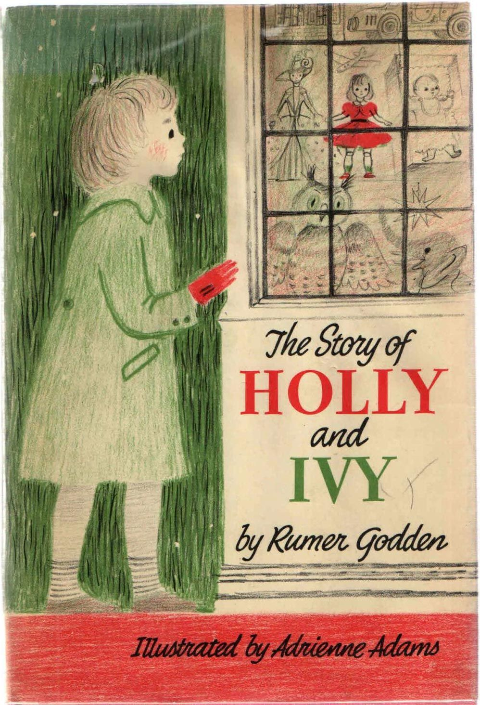
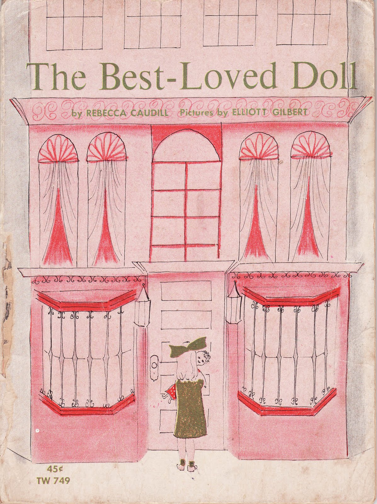
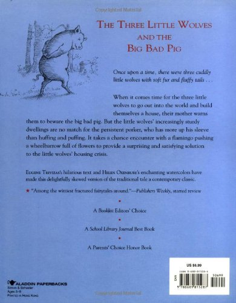
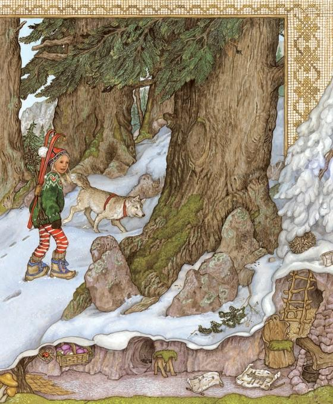

A: Something I love about your work is the magic and warmth it holds. There is a familiarity in it that reminds me of childhood and makes me want to sit down and draw for pure enjoyment. I wonder if there was a specific children’s book that you loved and read over and over again as a Child?
If there are multiple, was there one that you loved particularly for the imagery? Do you think any of the books you read as a kid influence your work now?
M: Thank you so much! Some of the books I remember reading over and over are:
The story of Holly and Ivy illustrated by Barbara Cooney,
The Best loved doll by Rebecca caudill,
the three little wolves and the big bad pig by Eugene Trivizas,
and the Trouble with Trolls by Jan Brett.

All of these books had great imagery and stories.The three little wolves had memorable imagery like a house made out of flowers.
The books I read as a kid definitely influence the work I make now. How...maybe in too many ways to name! I like to make art in a space of wonder, imaginations, and play. Picture books really helped me develop those senses and skills.